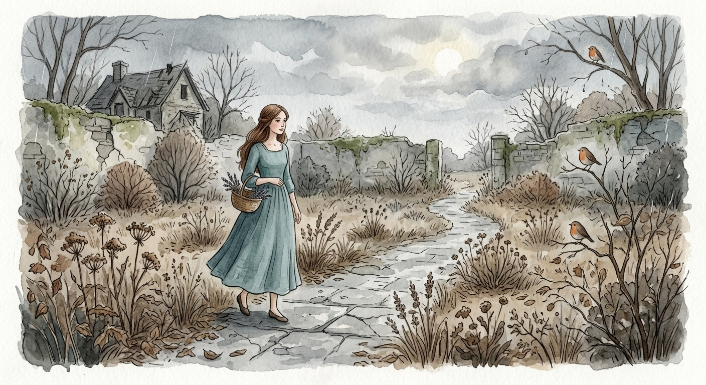
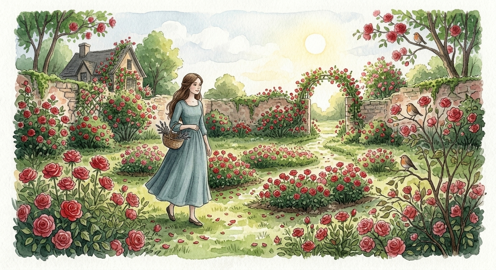

Güller teknik sebeplerden dolayı belki bugün fiziken eline ulaşamadı... Ama varsın ulaşmasın.
Çünkü onlar çoktan senin adım attığın her yerde, gözlerinin değdiği her renkte ve kalbimizdeki o hiç solmayacak aşk bahçesindeler.
İyi ki varsın sevgilimm...